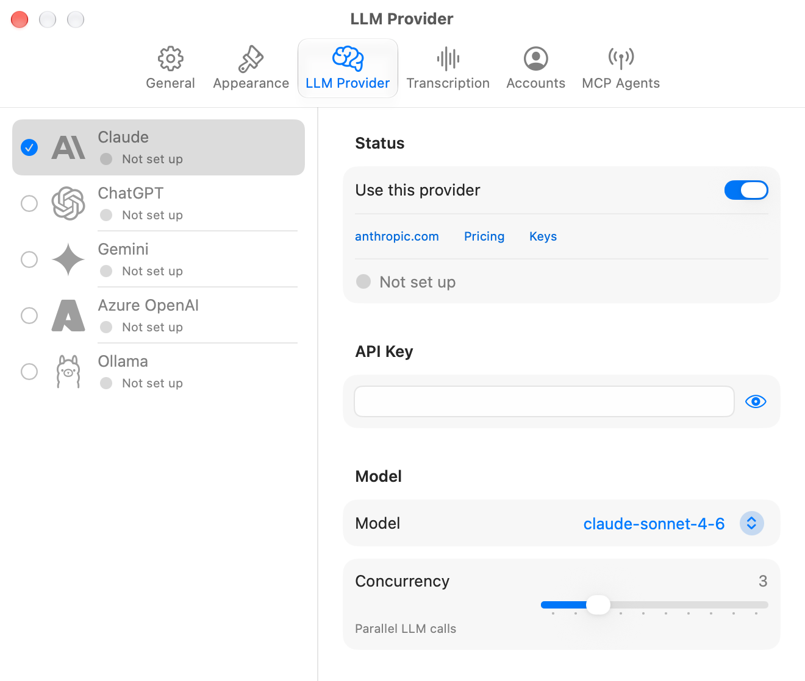
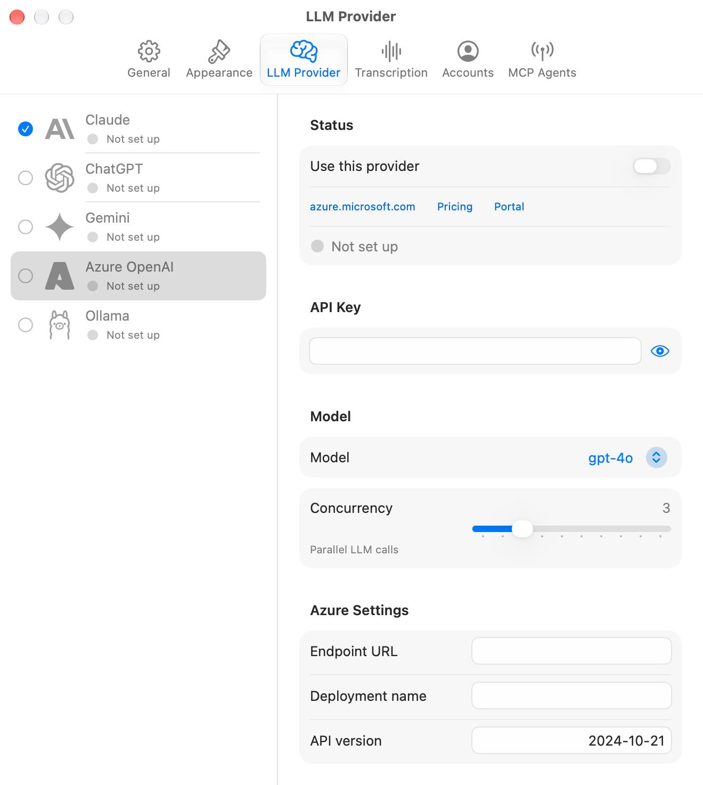
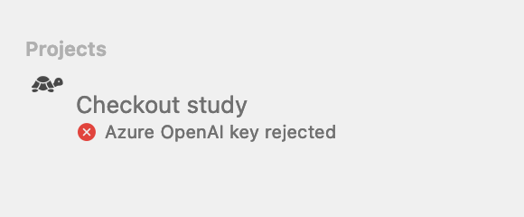
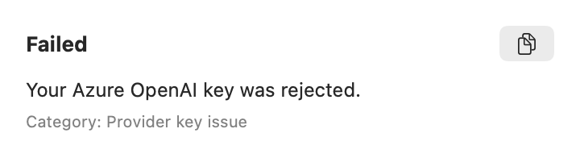
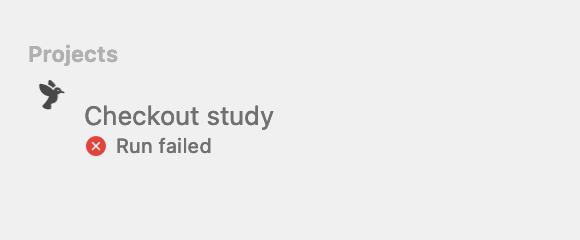
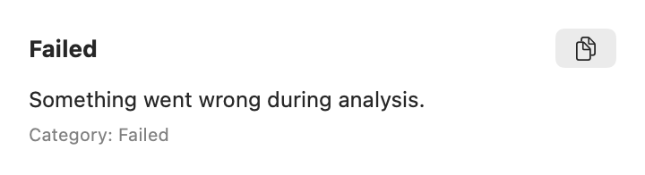
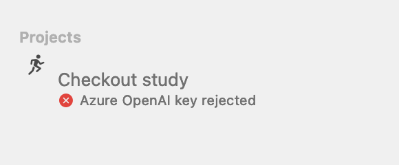
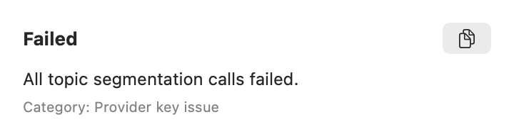

Captured from the running code at 2fc7dded7 (before: 9be56fe6f). Key: framed boxes are the product; hatched boxes are commentary. Guest screenshots present: 2.
CLI frames are the CLI's own output (Rich colours kept) against a fake Azure on this machine that answers with bodies Azure really sent. The fake's address is shown as a placeholder resource URL and the home folder as ~. Mac frames marked native render are the app's own views (the real Settings pane, the real AppKit sidebar row and diagnostic popover) drawn off-screen by AzureScenarioRenderTests: the pane shows a fake configuration and the verdict the real validator gave against a recorded Azure body, and each run row is the recorded run output passed through the Mac's own failure path. They follow your light or dark setting. The sidebar row is drawn unselected, because a view bitmap cannot draw the selection material. Frames marked drawn from source remain only where no native render exists yet; they place the shipped strings by locale key. Web frames are the refusal the server raises and the sentence the SPA shows for its reason.
Real pixels: the shipped Azure pane (0.46.0)
Taken in a throwaway macOS 27 guest from the 0.46.0 release app, no key entered. Tonight's build could not be staged (the staging build notarises), so these show 0.46.0, not this sha.
01-llm-providerscreenshot · shipped 0.46.0 in a macOS 27 guest

02-azure-selected-no-keyscreenshot · shipped 0.46.0 in a macOS 27 guest

1. Everything right
Trigger: Azure answers the check with 200
$ bristlenose doctorexit 0
bristlenose 0.46.0✓ FFmpeg 8.1.1(/opt/homebrew/bin/ffmpeg)✓ FFprobe /opt/homebrew/bin/ffprobe✓ Transcription mlx-whisper 0.4.3(MLX)— Whisper model large-v3-turbo not cached (~1.6 GB download on first run)✓ API key Azure OpenAI (...000)✓ Network contoso-research.openai.azure.com reachable (9ms)— PII redaction off (use --redact-pii to enable)— Voice pass switched off (BRISTLENOSE_VOICE_PASS)✓ any-llm 1.44.0 · Mistral, OpenRouter, DeepSeek✓ Disk space 48 GB free✓ Serve mode 6 deps installed✓ Auth token random (generated at serve startup)— Homebrew not a Homebrew formula installAll clear.
Trigger: Azure answers 401 (key wrong, or wrong regional endpoint)
$ bristlenose doctorexit 1
bristlenose 0.46.0✓ FFmpeg 8.1.1(/opt/homebrew/bin/ffmpeg)✓ FFprobe /opt/homebrew/bin/ffprobe✓ Transcription mlx-whisper 0.4.3(MLX)— Whisper model large-v3-turbo not cached (~1.6 GB download on first run)✗ API key Azure OpenAI rejected (401 Unauthorized)✓ Network contoso-research.openai.azure.com reachable (9ms)— PII redaction off (use --redact-pii to enable)— Voice pass switched off (BRISTLENOSE_VOICE_PASS)✓ any-llm 1.44.0 · Mistral, OpenRouter, DeepSeek✓ Disk space 48 GB free✓ Serve mode 6 deps installed✓ Auth token random (generated at serve startup)— Homebrew not a Homebrew formula install
Your Azure OpenAI credentials were rejected. Check:
1. API key is correct (Azure portal > your OpenAI resource > Keys)2. Endpoint URL matches your resource (https://NAME.openai.azure.com/)3. Deployment name exists in your resource
Then re-run: bristlenose configure azure
Sidebar row and its popover (Mac)native render · azure_run_refused_bad_key


3. Deployment name wrong (404 DeploymentNotFound)
Trigger: Azure answers 404 DeploymentNotFound (deployment name wrong)
$ bristlenose doctorexit 1
bristlenose 0.46.0✓ FFmpeg 8.1.1(/opt/homebrew/bin/ffmpeg)✓ FFprobe /opt/homebrew/bin/ffprobe✓ Transcription mlx-whisper 0.4.3(MLX)— Whisper model large-v3-turbo not cached (~1.6 GB download on first run)✗ API key Azure OpenAI rejected (Deployment 'research-gpt41mini' not found)✓ Network contoso-research.openai.azure.com reachable (9ms)— PII redaction off (use --redact-pii to enable)— Voice pass switched off (BRISTLENOSE_VOICE_PASS)✓ any-llm 1.44.0 · Mistral, OpenRouter, DeepSeek✓ Disk space 48 GB free✓ Serve mode 6 deps installed✓ Auth token random (generated at serve startup)— Homebrew not a Homebrew formula install
Your Azure OpenAI credentials were rejected. Check:
1. API key is correct (Azure portal > your OpenAI resource > Keys)2. Endpoint URL matches your resource (https://NAME.openai.azure.com/)3. Deployment name exists in your resource
Then re-run: bristlenose configure azure
Sidebar row and its popover (Mac)native render · azure_run_refused_deployment


4. Wrong URL pasted: portal or classic URL (generic 404)
Trigger: Azure answers a generic 404 (wrong path: a portal or classic URL pasted as the endpoint)
$ bristlenose doctorexit 1before
bristlenose 0.46.0✓ FFmpeg 8.1.1(/opt/homebrew/bin/ffmpeg)✓ FFprobe /opt/homebrew/bin/ffprobe✓ Transcription mlx-whisper 0.4.3(MLX)— Whisper model large-v3-turbo not cached (~1.6 GB download on first run)✗ API key Azure OpenAI rejected (Deployment 'research-gpt41mini' not found)✓ Network contoso-research.openai.azure.com reachable (10ms)— PII redaction off (use --redact-pii to enable)— Voice pass switched off (BRISTLENOSE_VOICE_PASS)✓ any-llm 1.44.0 · Mistral, OpenRouter, DeepSeek✓ Disk space 47 GB free✓ Serve mode 6 deps installed✓ Auth token random (generated at serve startup)— Homebrew not a Homebrew formula install
Your Azure OpenAI credentials were rejected. Check:
1. API key is correct (Azure portal > your OpenAI resource > Keys)2. Endpoint URL matches your resource (https://NAME.openai.azure.com/)3. Deployment name exists in your resource
Then re-run: bristlenose configure azure
$ bristlenose doctorexit 1after
bristlenose 0.46.0✓ FFmpeg 8.1.1(/opt/homebrew/bin/ffmpeg)✓ FFprobe /opt/homebrew/bin/ffprobe✓ Transcription mlx-whisper 0.4.3(MLX)— Whisper model large-v3-turbo not cached (~1.6 GB download on first run)✗ API key Azure OpenAI rejected (HTTP 404: Resource not found)✓ Network contoso-research.openai.azure.com reachable (10ms)— PII redaction off (use --redact-pii to enable)— Voice pass switched off (BRISTLENOSE_VOICE_PASS)✓ any-llm 1.44.0 · Mistral, OpenRouter, DeepSeek✓ Disk space 48 GB free✓ Serve mode 6 deps installed✓ Auth token random (generated at serve startup)— Homebrew not a Homebrew formula install
Trigger: Deployment's output limit is lower than 64000: 400, then 200 at the named limit
$ bristlenose doctorexit 0
bristlenose 0.46.0✓ FFmpeg 8.1.1(/opt/homebrew/bin/ffmpeg)✓ FFprobe /opt/homebrew/bin/ffprobe✓ Transcription mlx-whisper 0.4.3(MLX)— Whisper model large-v3-turbo not cached (~1.6 GB download on first run)✓ API key Azure OpenAI (...000)✓ Network contoso-research.openai.azure.com reachable (10ms)— PII redaction off (use --redact-pii to enable)— Voice pass switched off (BRISTLENOSE_VOICE_PASS)✓ any-llm 1.44.0 · Mistral, OpenRouter, DeepSeek✓ Disk space 48 GB free✓ Serve mode 6 deps installed✓ Auth token random (generated at serve startup)— Homebrew not a Homebrew formula installAll clear.
Settings ▸ LLM Provider (Mac)native render · AzureScenarioFixture.onlineSettings ▸ AI (Mac)drawn from source; not a screenshot
⚠Azure OpenAI rejected the request.
sidebar row, run failure: FailureMessage, apiRequest (a 400)
6. Azure throttling (429)
Trigger: Azure is throttling (429)
$ bristlenose doctorexit 0
bristlenose 0.46.0✓ FFmpeg 8.1.1(/opt/homebrew/bin/ffmpeg)✓ FFprobe /opt/homebrew/bin/ffprobe✓ Transcription mlx-whisper 0.4.3(MLX)— Whisper model large-v3-turbo not cached (~1.6 GB download on first run)✓ API key Azure OpenAI (...000)(could not validate: HTTP 429)✓ Network contoso-research.openai.azure.com reachable (10ms)— PII redaction off (use --redact-pii to enable)— Voice pass switched off (BRISTLENOSE_VOICE_PASS)✓ any-llm 1.44.0 · Mistral, OpenRouter, DeepSeek✓ Disk space 48 GB free✓ Serve mode 6 deps installed✓ Auth token random (generated at serve startup)— Homebrew not a Homebrew formula installAll clear.
bristlenose 0.46.0✓ FFmpeg 8.1.1(/opt/homebrew/bin/ffmpeg)✓ FFprobe /opt/homebrew/bin/ffprobe✓ Transcription mlx-whisper 0.4.3(MLX)— Whisper model large-v3-turbo not cached (~1.6 GB download on first run)✓ API key Azure OpenAI (...000)(could not validate: HTTP 503)✓ Network contoso-research.openai.azure.com reachable (10ms)— PII redaction off (use --redact-pii to enable)— Voice pass switched off (BRISTLENOSE_VOICE_PASS)✓ any-llm 1.44.0 · Mistral, OpenRouter, DeepSeek✓ Disk space 48 GB free✓ Serve mode 6 deps installed✓ Auth token random (generated at serve startup)— Homebrew not a Homebrew formula installAll clear.
bristlenose 0.46.0✓ FFmpeg 8.1.1(/opt/homebrew/bin/ffmpeg)✓ FFprobe /opt/homebrew/bin/ffprobe✓ Transcription mlx-whisper 0.4.3(MLX)— Whisper model large-v3-turbo not cached (~1.6 GB download on first run)✓ API key Azure OpenAI (...000)(could not validate: HTTP 302)✗ Network Can't reach contoso-research.openai.azure.com— PII redaction off (use --redact-pii to enable)— Voice pass switched off (BRISTLENOSE_VOICE_PASS)✓ any-llm 1.44.0 · Mistral, OpenRouter, DeepSeek✓ Disk space 48 GB free✓ Serve mode 6 deps installed✓ Auth token random (generated at serve startup)— Homebrew not a Homebrew formula install
Check your internet connection. If you're behind a proxy:
export HTTPS_PROXY=http://proxy:port
Trigger: Nothing answers at the endpoint (offline, or a mistyped resource name)
$ bristlenose doctorexit 1
bristlenose 0.46.0✓ FFmpeg 8.1.1(/opt/homebrew/bin/ffmpeg)✓ FFprobe /opt/homebrew/bin/ffprobe✓ Transcription mlx-whisper 0.4.3(MLX)— Whisper model large-v3-turbo not cached (~1.6 GB download on first run)✓ API key Azure OpenAI (...000)(could not validate: [Errno 61]Connection refused)✗ Network Can't reach contoso-research.openai.azure.com— PII redaction off (use --redact-pii to enable)— Voice pass switched off (BRISTLENOSE_VOICE_PASS)✓ any-llm 1.44.0 · Mistral, OpenRouter, DeepSeek✓ Disk space 48 GB free✓ Serve mode 6 deps installed✓ Auth token random (generated at serve startup)— Homebrew not a Homebrew formula install
Check your internet connection. If you're behind a proxy:
export HTTPS_PROXY=http://proxy:port
bristlenose 0.46.0✓ FFmpeg 8.1.1(/opt/homebrew/bin/ffmpeg)✓ FFprobe /opt/homebrew/bin/ffprobe✓ Transcription mlx-whisper 0.4.3(MLX)— Whisper model large-v3-turbo not cached (~1.6 GB download on first run)✗ API key No Azure OpenAI endpoint— Network azure endpoint not configured— PII redaction off (use --redact-pii to enable)— Voice pass switched off (BRISTLENOSE_VOICE_PASS)✓ any-llm 1.44.0 · Mistral, OpenRouter, DeepSeek✓ Disk space 48 GB free✓ Serve mode 6 deps installed✓ Auth token random (generated at serve startup)— Homebrew not a Homebrew formula install
bristlenose needs Azure OpenAI credentials to analyse transcripts.
From your Azure portal, set these environment variables:
export BRISTLENOSE_AZURE_ENDPOINT=https://your-resource.openai.azure.com/
export BRISTLENOSE_AZURE_API_KEY=your-key-here
export BRISTLENOSE_AZURE_DEPLOYMENT=your-deployment-name
Or add them to a .env file. To store the key in your Keychain:
bristlenose configure azure
To use Claude instead: bristlenose run <input> --llm claudeTo only transcribe: bristlenose transcribe <input>
Trigger: Key and endpoint saved, deployment not set
$ bristlenose doctorexit 1
bristlenose 0.46.0✓ FFmpeg 8.1.1(/opt/homebrew/bin/ffmpeg)✓ FFprobe /opt/homebrew/bin/ffprobe✓ Transcription mlx-whisper 0.4.3(MLX)— Whisper model large-v3-turbo not cached (~1.6 GB download on first run)✗ API key No Azure OpenAI deployment name✓ Network contoso-research.openai.azure.com reachable (10ms)— PII redaction off (use --redact-pii to enable)— Voice pass switched off (BRISTLENOSE_VOICE_PASS)✓ any-llm 1.44.0 · Mistral, OpenRouter, DeepSeek✓ Disk space 48 GB free✓ Serve mode 6 deps installed✓ Auth token random (generated at serve startup)— Homebrew not a Homebrew formula install
bristlenose needs Azure OpenAI credentials to analyse transcripts.
From your Azure portal, set these environment variables:
export BRISTLENOSE_AZURE_ENDPOINT=https://your-resource.openai.azure.com/
export BRISTLENOSE_AZURE_API_KEY=your-key-here
export BRISTLENOSE_AZURE_DEPLOYMENT=your-deployment-name
Or add them to a .env file. To store the key in your Keychain:
bristlenose configure azure
To use Claude instead: bristlenose run <input> --llm claudeTo only transcribe: bristlenose transcribe <input>
bristlenose 0.46.0✓ FFmpeg 8.1.1(/opt/homebrew/bin/ffmpeg)✓ FFprobe /opt/homebrew/bin/ffprobe✓ Transcription mlx-whisper 0.4.3(MLX)— Whisper model large-v3-turbo not cached (~1.6 GB download on first run)✗ API key No Azure OpenAI API key✓ Network contoso-research.openai.azure.com reachable (10ms)— PII redaction off (use --redact-pii to enable)— Voice pass switched off (BRISTLENOSE_VOICE_PASS)✓ any-llm 1.44.0 · Mistral, OpenRouter, DeepSeek✓ Disk space 48 GB free✓ Serve mode 6 deps installed✓ Auth token random (generated at serve startup)— Homebrew not a Homebrew formula install
bristlenose needs Azure OpenAI credentials to analyse transcripts.
From your Azure portal, set these environment variables:
export BRISTLENOSE_AZURE_ENDPOINT=https://your-resource.openai.azure.com/
export BRISTLENOSE_AZURE_API_KEY=your-key-here
export BRISTLENOSE_AZURE_DEPLOYMENT=your-deployment-name
Or add them to a .env file. To store the key in your Keychain:
bristlenose configure azure
To use Claude instead: bristlenose run <input> --llm claudeTo only transcribe: bristlenose transcribe <input>
Chat lens (lab page, raw): “No API key configured for provider 'azure'”
13. Run with a rejected key
Trigger: Run started with a rejected key: the setup check stops it before any work
$ bristlenose run <project>/inputexit 1
Bristlenose v0.46.0 · 2fc7dded7-dirty · Azure OpenAI · Apple M2 Max · MLXChecking your setup✓ FFmpeg 8.1.1(/opt/homebrew/bin/ffmpeg)✓ FFprobe /opt/homebrew/bin/ffprobe✓ Transcription mlx-whisper 0.4.3(MLX)— Whisper model large-v3-turbo not cached (~1.6 GB download on first run)✗ API key Azure OpenAI rejected (401 Unauthorized)✓ Network contoso-research.openai.azure.com reachable (10ms)— PII redaction off (use --redact-pii to enable)✓ Disk space 48 GB free✓ Serve mode 6 deps installed
Your Azure OpenAI credentials were rejected. Check:
1. API key is correct (Azure portal > your OpenAI resource > Keys)2. Endpoint URL matches your resource (https://NAME.openai.azure.com/)3. Deployment name exists in your resource
Then re-run: bristlenose configure azure
Sidebar row and its popover (Mac)native render · azure_run_refused_bad_key
14. Run with a wrong deployment
Trigger: Run started with a deployment name that doesn't exist
$ bristlenose run <project>/inputexit 1
Bristlenose v0.46.0 · 2fc7dded7-dirty · Azure OpenAI · Apple M2 Max · MLXChecking your setup✓ FFmpeg 8.1.1(/opt/homebrew/bin/ffmpeg)✓ FFprobe /opt/homebrew/bin/ffprobe✓ Transcription mlx-whisper 0.4.3(MLX)— Whisper model large-v3-turbo not cached (~1.6 GB download on first run)✗ API key Azure OpenAI rejected (Deployment 'research-gpt41mini' not found)✓ Network contoso-research.openai.azure.com reachable (9ms)— PII redaction off (use --redact-pii to enable)✓ Disk space 48 GB free✓ Serve mode 6 deps installed
Your Azure OpenAI credentials were rejected. Check:
1. API key is correct (Azure portal > your OpenAI resource > Keys)2. Endpoint URL matches your resource (https://NAME.openai.azure.com/)3. Deployment name exists in your resource
Then re-run: bristlenose configure azure
Sidebar row and its popover (Mac)native render · azure_run_refused_deployment
15. Key revoked while a run is going
Trigger: Setup check passes, then every analysis call is refused 401 (key revoked mid-run)
$ bristlenose run <project>/inputexit 1
Bristlenose v0.46.0 · 2fc7dded7-dirty · Azure OpenAI · Apple M2 Max · MLXChecking your setup✓ FFmpeg 8.1.1(/opt/homebrew/bin/ffmpeg)✓ FFprobe /opt/homebrew/bin/ffprobe✓ Transcription mlx-whisper 0.4.3(MLX)— Whisper model large-v3-turbo not cached (~1.6 GB download on first run)✓ API key Azure OpenAI (...000)✓ Network contoso-research.openai.azure.com reachable (9ms)— PII redaction off (use --redact-pii to enable)✓ Disk space 48 GB free✓ Serve mode 6 deps installed1 session in input/✓ Ingested 1 session (1 subtitle_vtt)0.0s
No more questions. Ctrl+C anytime.
⠋WARNING | bristlenose.llm.client | llm_call_failed | provider=azure | request_model=research-gpt41mini | schema=SpeakerRoleAssignment | error_type=AuthenticationError | error=status=401 | message=Access denied due to invalid subscription key or wrong API endpoint. Make sure to provide a valid key for an active subscription and use a correct regional API endpoint for your resource.
✓ Read 1 session (8 segments)0.8s✓ Identified speakers 0.1s⚠Access denied due to invalid subscription key or wrong API endpoint. Make…✓ Merged transcripts 0.0s ⠋Merging transcripts...WARNING | bristlenose.llm.client | llm_call_failed | provider=azure | request_model=research-gpt41mini | schema=TopicSegmentationResult | error_type=AuthenticationError | error=status=401 | message=Access denied due to invalid subscription key or wrong API endpoint. Make sure to provide a valid key for an active subscription and use a correct regional API endpoint for your resource.
WARNING | bristlenose.llm.client | llm_call_failed | provider=azure | request_model=research-gpt41mini | schema=TopicSegmentationResult | error_type=AuthenticationError | error=status=401 | message=Access denied due to invalid subscription key or wrong API endpoint. Make sure to provide a valid key for an active subscription and use a correct regional API endpoint for your resource.
✗ Segmented 0 topic boundaries 0.8s ⠙Segmenting topics... (1/1 session)✗ Azure OpenAI rejected your API key (…000).
Run bristlenose configure to set a new key.
Sidebar row and its popover (Mac)native render · azure_run_key_revoked_mid_run


16. Storing a key: configure azure
Trigger: Researcher stores an Azure key (typed at the prompt)
$ bristlenose configure azureexit 0
Enter your Azure OpenAI API key:
Validating...⚠ Could not validate: needs endpoint and deployment to validate
Storing anyway...✓ Stored in Keychain as "Bristlenose Azure API Key"Azure OpenAI also needs endpoint and deployment name.Add to .env or environment:BRISTLENOSE_AZURE_ENDPOINT=https://your-resource.openai.azure.com/BRISTLENOSE_AZURE_DEPLOYMENT=your-deployment-name
Azure OpenAI is now your provider for analysis.
You can now run: bristlenose run interviews
Usage: bristlenose run [OPTIONS] {input_dir}
Analyse a folder of interviews and open the report in your browser.
╭─ Arguments ──────────────────────────────────────────────────────────────────╮│* input_dir <directory> Directory containing audio, video, ││ subtitle, or docx files. ││[required] │╰──────────────────────────────────────────────────────────────────────────────╯╭─ Options ────────────────────────────────────────────────────────────────────╮│--output-o<path> Output directory (default: ││ bristlenose-output/ inside input ││ folder). ││--project-p<str> Name of the research project (defaults ││ to input folder name). ││--whisper-backend-b<str> Transcription backend: auto (detect ││ hardware), mlx (Apple Silicon GPU), ││ faster-whisper (CUDA/CPU). ││--whisper-model-w<str> Whisper model size: tiny, base, small, ││ medium, large-v3, large-v3-turbo. ││--whisper-language<str> Spoken language of the recordings as a ││ Whisper code (es, ne, yue…), or auto ││ to detect per file. ││--llm-l<str> LLM provider: claude, chatgpt, azure, ││ gemini, local, any-llm. ││--codebook<str> Codebook framework for AutoCode (run ││ `bristlenose codebooks` to list). ││--skip-transcription Skip audio transcription. ││--redact-pii Redact personally identifying ││ information from transcripts. ││--retain-pii Retain PII in transcripts (default ││ behaviour). ││--no-serve Don't start the local report server ││ when the pipeline finishes: print the ││ summary and exit. Runs without a ││ terminal (cron, pipes, CI) never start ││ it. ││--clean Start afresh. The previous report is ││ replaced once the fresh analysis has ││ produced a session. ││--yes-y With --clean, don't ask before ││ discarding the previous report's ││ stars, tags and edits. ││--dev Development mode: enable responsive ││ playground in served report. ││--verbose-v Enable verbose logging. ││--no-fetch Abort instead of downloading missing ││ models (Whisper, spaCy). Run ││ `bristlenose doctor --fetch` first to ││ pre-warm the cache. ││--help Show this message and exit. │╰──────────────────────────────────────────────────────────────────────────────╯
$ bristlenose analyze --helpexit 0
Usage: bristlenose analyze [OPTIONS] {transcripts_dir}
Run LLM analysis on existing transcripts (skip ingestion and transcription).
╭─ Arguments ──────────────────────────────────────────────────────────────────╮│* transcripts_dir <directory> Directory of existing transcript .txt ││ files to analyze. ││[required] │╰──────────────────────────────────────────────────────────────────────────────╯╭─ Options ────────────────────────────────────────────────────────────────────╮│--output-o<path> Output directory (default: parent of ││ transcripts_dir, or bristlenose-output/ if ││ transcripts_dir is named transcripts-raw). ││--project-p<str> Name of the research project (defaults to input ││ folder name). ││--llm-l<str> LLM provider: claude, chatgpt, azure, gemini, ││ local, any-llm. ││--codebook<str> Codebook framework for AutoCode (run ││ `bristlenose codebooks` to list). ││--verbose-v Enable verbose logging. ││--no-fetch Abort instead of downloading missing models. Run ││ `bristlenose doctor --fetch` first to pre-warm ││ the cache. ││--help Show this message and exit. │╰──────────────────────────────────────────────────────────────────────────────╯
$ bristlenose doctor --helpexit 0
Usage: bristlenose doctor [OPTIONS]
Check dependencies, API keys, and system configuration.
With --self-test, runs only the bundle-integrity checks — asserts everyruntime-data file the code will look for (React SPA, codebook YAMLs,LLM prompts, locales, theme, Alembic) is present and non-trivial.Exits 1 when any check fails (warnings and notes exit 0). --self-testexits non-zero on any failure too, and is used by desktop/scripts/build-all.shstep 7a to catch BUG-3/4/5-class packaging bugs at build time.╭─ Options ────────────────────────────────────────────────────────────────────╮│--self-test Run bundle-integrity checks only (for build-all.sh ││ pre-archive). ││--fetch Pre-download the Whisper transcription model (~1.6 GB), ││ and the voice model (40 MB) when the voice extra is ││ installed, so a run works offline or with --no-fetch. ││--help Show this message and exit. │╰──────────────────────────────────────────────────────────────────────────────╯
$ bristlenose configure --helpexit 0
Usage: bristlenose configure [OPTIONS] {provider}
Set up API credentials for an LLM provider.
Validates the key with a test API call, then stores it securely in yoursystem credential store (macOS Keychain or Linux Secret Service). When nokeyring is available (e.g. a headless server), it persists the key to aprotected config file instead — so the command always leaves you configured.╭─ Arguments ──────────────────────────────────────────────────────────────────╮│* provider <str> Provider to configure: claude, chatgpt, gemini, ││ azure, local, any-llm, or miro. ││[required] │╰──────────────────────────────────────────────────────────────────────────────╯╭─ Options ────────────────────────────────────────────────────────────────────╮│--key-k<str> API key (if not provided, prompts interactively). ││--help Show this message and exit. │╰──────────────────────────────────────────────────────────────────────────────╯
$ bristlenose use --helpexit 0
Usage: bristlenose use [OPTIONS] {provider}
Choose which AI provider runs the analysis.
Persists the choice in your user-level config — the CLI equivalent of themacOS app keeping the provider you last set. Keys stay stored; switch anytime. --llm and BRISTLENOSE_LLM_PROVIDER still override per run.╭─ Arguments ──────────────────────────────────────────────────────────────────╮│* provider <str> Provider to use for analysis: claude, chatgpt, ││ gemini, azure, local, any-llm, or an any-llm model ││ as provider:model. ││[required] │╰──────────────────────────────────────────────────────────────────────────────╯╭─ Options ────────────────────────────────────────────────────────────────────╮│--help Show this message and exit. │╰──────────────────────────────────────────────────────────────────────────────╯

CLI frames are the CLI's own output (Rich colours kept) against a fake Azure on this machine that answers with bodies Azure really sent. The fake's address is shown as a placeholder resource URL and the home folder as ~. Mac frames marked native render are the app's own views (the real Settings pane, the real AppKit sidebar row and diagnostic popover) drawn off-screen by
AzureScenarioRenderTests: the pane shows a fake configuration and the verdict the real validator gave against a recorded Azure body, and each run row is the recorded run output passed through the Mac's own failure path. They follow your light or dark setting. The sidebar row is drawn unselected, because a view bitmap cannot draw the selection material. Frames marked drawn from source remain only where no native render exists yet; they place the shipped strings by locale key. Web frames are the refusal the server raises and the sentence the SPA shows for its reason.